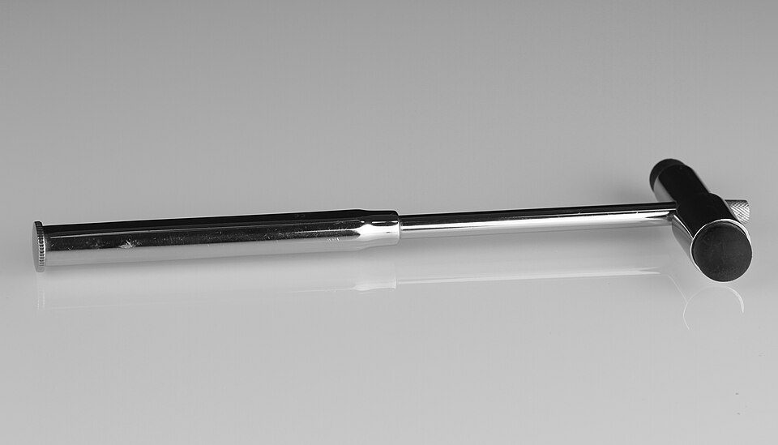

The most important tool
In neurology, the medical history and the examination remain the most important diagnostic tools. With them, a neurologist can often tell where the lesion is (in the brain, brainstem, spinal cord, a nerve or a muscle) and what kind of process it is (vascular, inflammatory, degenerative, tumour), before ordering any test. Tests confirm or rule out what the examination suggests. It was in the 19th century, with Charcot, Babinski and others, that the neurological examination still used today was systematised.
It is done with simple instruments: a reflex hammer, a torch, a tuning fork, an ophthalmoscope, a pin or a piece of cotton wool.
What is examined
Mental functions
Level of consciousness, orientation, attention, memory, language (comprehension, repetition, naming objects, reading and writing), calculation and visuospatial ability. If needed, it is completed with cognitive tests.
Cranial nerves
The twelve cranial nerves control smell, vision, eye movements, sensation and muscles of the face, hearing, swallowing and the tongue. Visual acuity and visual field, the pupils, eye movements, facial strength and speech are examined.


The fundus of the eye shows the optic disc: if it is swollen (papilloedema), it indicates raised pressure inside the skull.
Motor system
- Strength of each muscle group, scored from 0 to 5.
- Muscle tone: rigidity, spasticity or floppiness.
- Muscle bulk: wasting, fasciculations.
- Abnormal movements: tremor, dystonia, chorea, myoclonus.
Reflexes


- Tendon reflexes (knee, ankle, biceps, triceps): increased in lesions of the brain or spinal cord (upper motor neuron); reduced or absent in lesions of the nerves (lower motor neuron).
- Plantar reflex: when the sole of the foot is stroked, the toes normally bend downwards. If the big toe extends upwards, this is the Babinski sign, which indicates a lesion of the central motor pathway.
Sensation
Pain (with a pin), touch, temperature, vibration (with the tuning fork) and joint position. The pattern of the change locates the lesion: glove and stocking (polyneuropathy), in a nerve territory, in a band (root), below a level (spinal cord) or in half the body (brain).
Coordination
Tests such as finger-nose, heel-shin and rapid alternating movements, which are impaired in lesions of the cerebellum.
Gait and balance
How the patient walks, on tiptoe, on the heels and in a straight line, and Romberg's test: standing with feet together and eyes closed. There are characteristic gaits: Parkinson's (short steps), ataxic (legs apart), stroke (swinging the leg out) or foot drop.
Meningeal signs
Neck stiffness and other signs indicate irritation of the meninges, as in meningitis or subarachnoid haemorrhage.
Scales
In specific situations standardised scales are used: the Glasgow Coma Scale in head injuries, the NIHSS in stroke, the EDSS in multiple sclerosis or the MDS-UPDRS in Parkinson's.
Sources
- Campbell WW, Barohn RJ. DeJong's The Neurologic Examination. 8th ed. Wolters Kluwer; 2019.
- Nicholl DJ, Appleton JP. Clinical neurology: why this still matters in the 21st century. J Neurol Neurosurg Psychiatry. 2015;86:229-33.
- Zarranz JJ. Neurología. 6th ed. Elsevier; 2018.